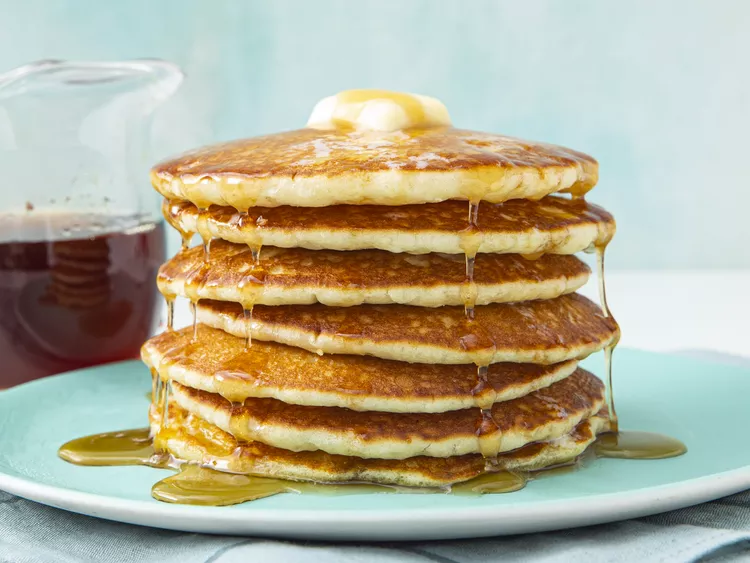

Protein Pancakes

Homemade Protein Pancakes made with Kodiak Cakes
Ingredients
- 1 cup of Kodiak Cakes
- Milk (as much as needed)
- 1 egg
- 1 tsp of Vanilla extract
- Butter
- Maple Syrup
Steps
- Pour Kodiak mix into a bowl and mix with milk until smooth.
- Crack egg into mix and stir until blended well.
- Add vanilla extract into mix and stir up if desired.
- Add scoop of mix into the pan and cook pancakes untilk golden brown